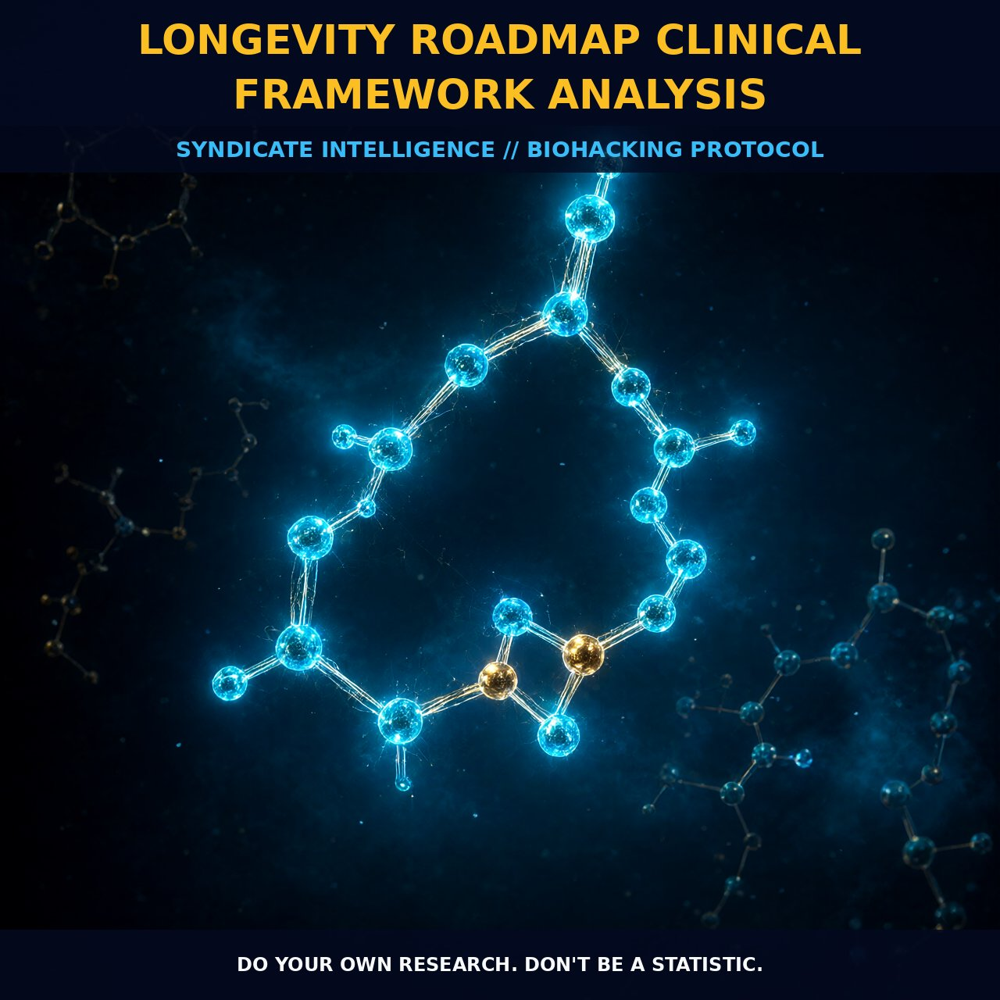

Epigenetic Trajectory Analysis: Precision Longevity Frameworks

1. The Mechanism of Biological Time Reconfiguration
The transition from traditional sickness care to longevity medicine represents a fundamental reconfiguration of how we view biological time and healthspan. Rather than treating degenerative diseases as isolated entities, the current clinical framework posits that aging itself is the primary driver underlying conditions such as cancer, cardiovascular disease, and neurodegeneration.
This paradigm shift allows therapies to target the root cause of decline rather than merely mitigating symptoms, creating a multiplicative effect on overall vitality. Researchers are now leveraging sophisticated genomics and artificial intelligence to track biological age with precision, moving beyond simple chronological markers to methylation-based clocks that reveal actual cellular deterioration rates.
2. Biological Leverage Through Data and Metabolism
Central to this framework is the ability to measure and modulate biological age through actionable data. The integration of AI-driven bioscience enables the identification of proxy markers via specific methylation sites, providing a comprehensive portrait of an individual’s aging trajectory.
Caloric restriction remains a pivotal mechanistic anchor in this system, serving as a validated method for extending lifespan by modulating key metabolic pathways. By understanding how caloric intake influences cellular maintenance, we gain a pragmatic foundation for developing anti-aging therapies that address multiple diseases simultaneously. This leverage point is powerful because it informs the development of longevity products with clear on-label uses while allowing for off-label exploration.
The application of artificial intelligence amplifies this leverage by processing massive datasets to reveal patterns that human analysis might miss. This computational power supports the transition from reactive disease management to proactive health optimization, where interventions are predicted based on genomic and epigenomic trends. The framework encourages continuous self-reflection, allowing individuals to track outcomes such as skin rejuvenation, metabolic health, and cognitive sharpness in real time.
3. Tactical Implementation for the Syndicate Member
For those ready to apply this framework, the starting point involves a rigorous review of health history and current biomarkers to establish a baseline biological age. Utilizing tests with published algorithms that correlate methylation sites to disease outcomes is critical for obtaining actionable data.
Implementation involves a collaborative, personalized approach where lifestyle adjustments are monitored alongside therapeutic inputs like metformin, rapamycin, or peptides. The goal is not merely to look younger but to extend the period of life spent in good health. Patients are encouraged to become insiders in their own care, evaluating efficacy through continuous feedback loops rather than passive consumption.
Prostar Life Hack
Anchored Precision: Don't just consume supplements; anchor your protocol to your molecular profile. Utilize advanced methylation testing (e.g., TruDiagnostic) to establish a baseline, then use those specific epigenetic markers to validate whether interventions like caloric restriction or peptides are actually slowing your cellular clock, distinguishing genuine biological leverage from market noise.
Prostar Life Hack
Prostar Life Hack
Anchored Precision: Don't just consume supplements; anchor your protocol to your molecular profile. Utilize advanced methylation testing (e.g., TruDiagnostic) to establish a baseline, then use those specific epigenetic markers to validate whether interventions like caloric restriction or peptides are actually slowing your cellular clock, distinguishing genuine biological leverage from market noise.
[ AUTHOR: LEAD TECHNICAL RESEARCHER ]
[FRESH ON CHAIN: 48c524998eae105e... ]